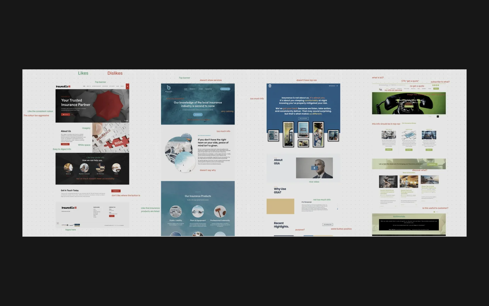

Case studies
A closer look at the questions behind the work, the decisions I made and what we learned from the results.
-

NRMA Sum Insured Optimisation
What happened when we made the next step clearer after a rebuild estimate?
-

NRMA Quote Flow Redesign
How we tested clearer pricing and cover comparisons in the NRMA quote flow.
-

NRMA Sum Insured Discovery
A comparative study of how homeowners understood rebuild costs.
-

NRMA Quote & Buy Reimagine
Reworking the home insurance journey around the information customers actually needed.
-

Complete Insurance Advisors
Designing and building a clearer way to find brokerage services and claims support.